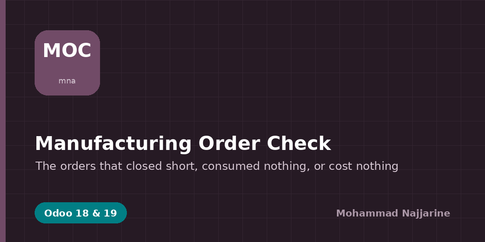
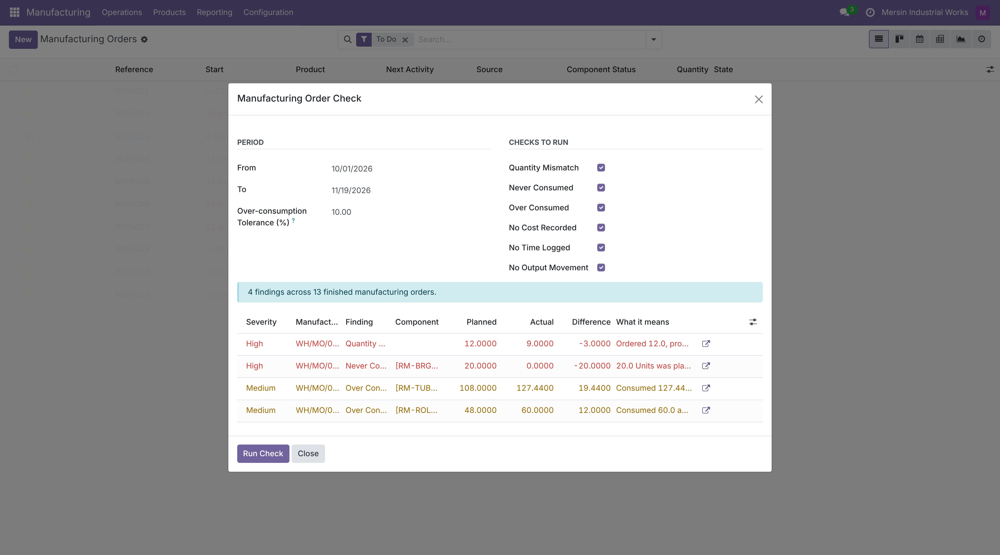
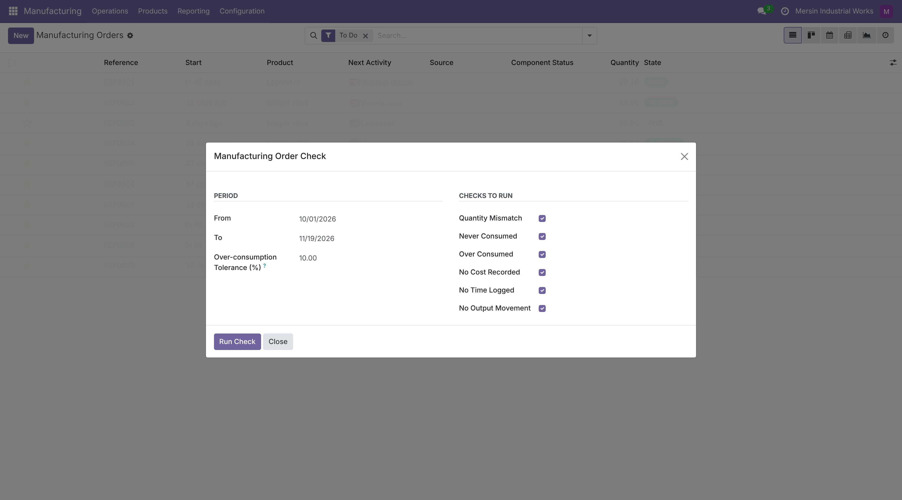

A manufacturing order can close in a state nobody notices. It produces 90 when it was told to produce 100 and the shortfall never reaches anyone. A component is on the order and never consumed, so stock stays high and the cost of what you made is understated. A work centre logs no time at all, so every hour of labour in that order is free.
None of this throws an error. It shows up weeks later as stock that will not reconcile and a margin nobody believes. This is one screen that goes looking for it.
Free and open source under LGPL-3.
Orders that produced more or less than they were told to, with both figures and the difference.
Planned on the order and consumed at zero, which overstates stock and understates what you made.
Past a tolerance you set, so normal scrap stays out of the report.
Components with no cost recorded, and work orders that logged no time at all.
Thirteen finished orders here, four findings, and the healthy nine are not mentioned. A check that fires on good data gets switched off within a week, so every rule is written to stay silent on a clean order.

Run the whole set or just the one you are chasing, over any period, with the over-consumption tolerance in your hands.

Some scrap is normal. A component consumed over plan by less than the tolerance is not reported at all, and a bill of materials set to flexible consumption is left alone entirely, because that setting was chosen on purpose and arguing with it is noise.
A component consumed at zero is reported once, as never consumed. It is not also reported as having an unusual quantity.
Each finding carries the planned figure and the actual one, so you can tell at a glance whether it is worth your morning.
| Odoo | 18.0 and 19.0, Community or Enterprise |
| Depends on | Manufacturing only |
| Licence | LGPL-3, free |
| Tested | 14 automated tests on both 18.0 and 19.0, including a clean order that must produce no findings at all |
Written and maintained by Mohammad Najjarine, Odoo consultant. Questions, bug reports and customisation requests are answered.
Phone +961 71 835279 WhatsApp +961 71 835279 github.com/najjarinelb